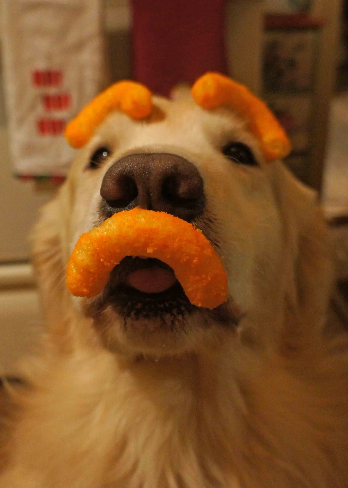
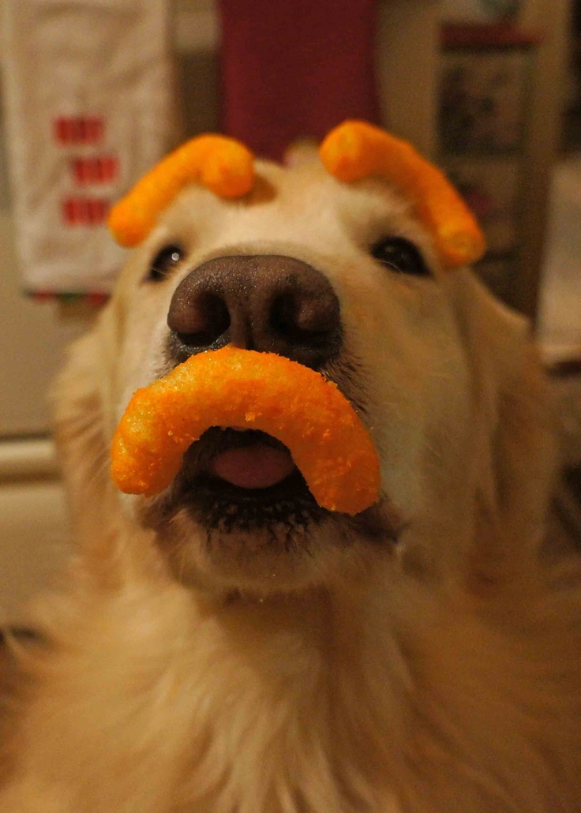
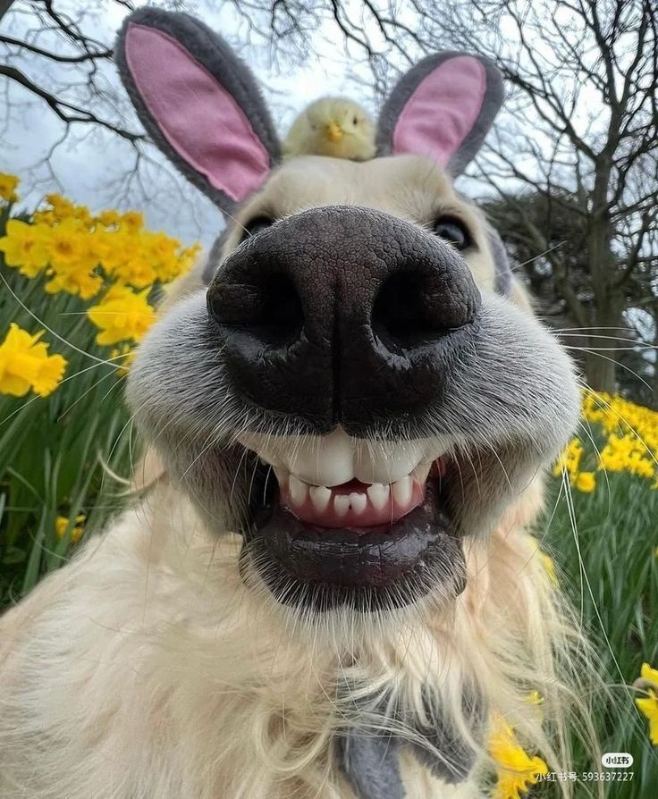
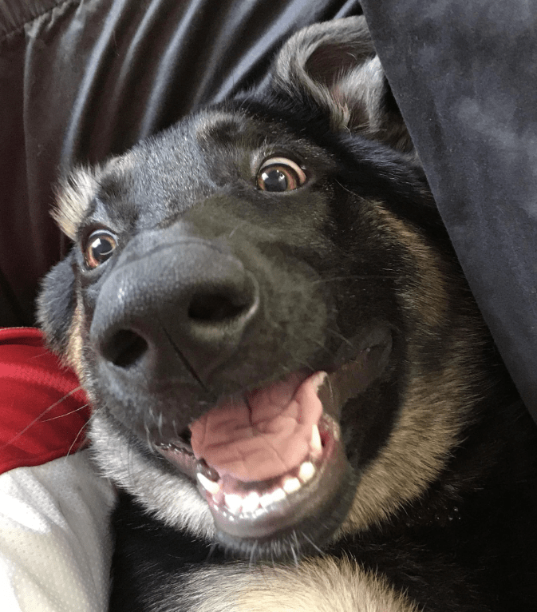
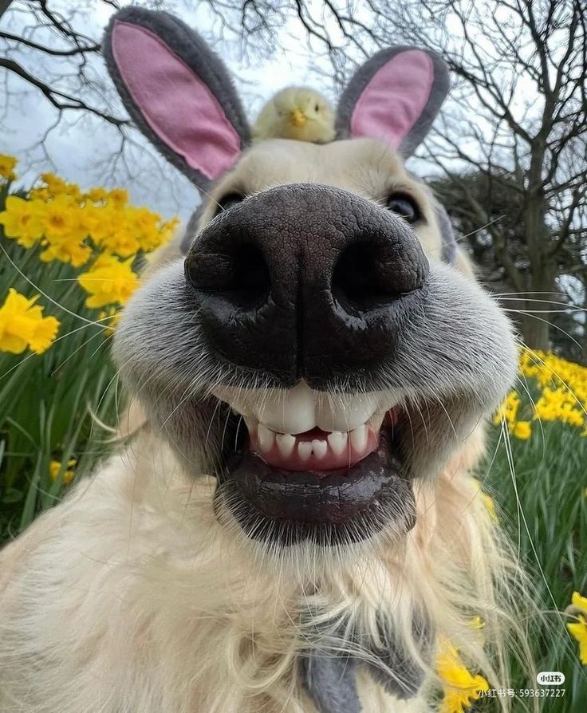
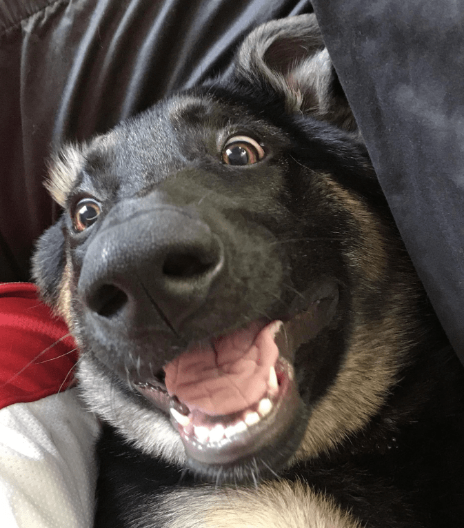
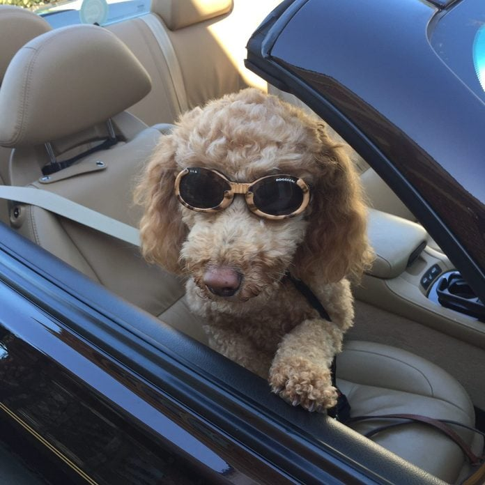
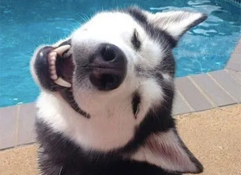
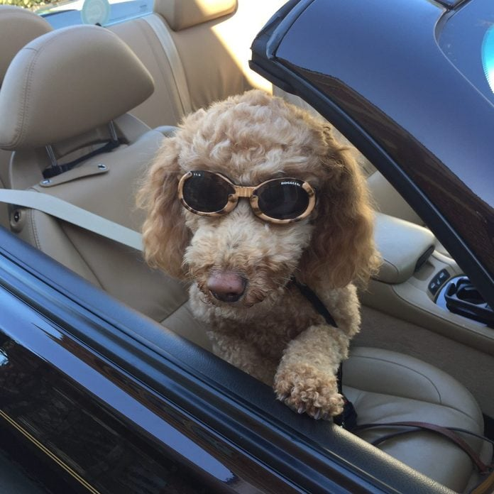
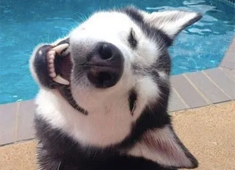

Gallery
The Wag Wall is a growing collection of moments submitted by pet lovers who believe that every wag, stretch, sniff and sleepy blink deserves to be remembered. Each photo captures something real — a burst of energy, a quiet moment of comfort, a goofy pose or a glimpse of pure personality. As you browse, you’ll meet pets who are playful, dramatic, cautious, curious, cuddly and everything in between. This gallery exists to highlight the joy our animals bring into our lives, one snapshot at a time.
 

 



 


